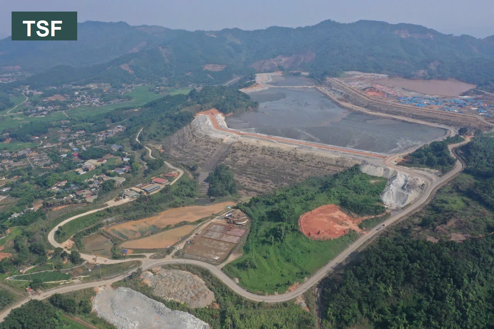
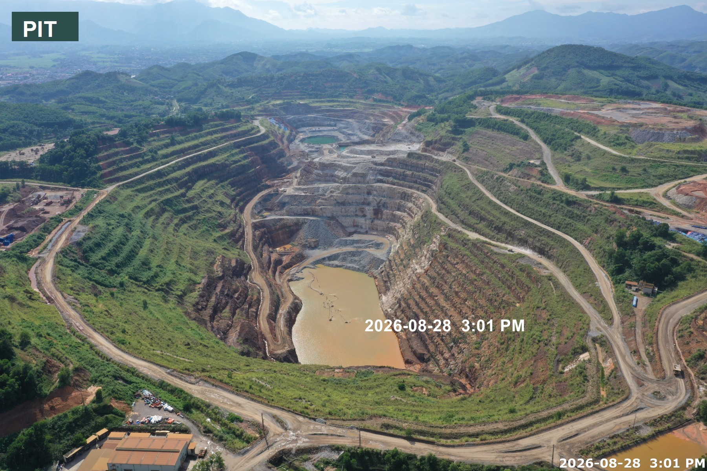

Mining geotechnics
A practical perspective on ground behaviour and the geotechnical questions surrounding mining environments.
MINING GEOTECHNICS · ENERGY · AI
I’m Doan Cong Bien, a senior geotechnical engineer and PhD student connecting ground engineering with energy geostructure research.
Practical engineering perspective. Research-driven curiosity.


Aerial perspective · Mine geotechnics
THE PERSPECTIVE
The ground is the common thread: from understanding mine slopes to exploring how geotechnical infrastructure can interact with energy systems.
My experience spans open-pit slope assessment, geological mapping, geotechnical monitoring and tailings storage facilities. My doctoral research focuses on energy geostructures, while my wider interests include artificial intelligence and deep learning for geotechnical applications.
I’m interested in conversations that connect engineering practice, academic inquiry and responsible digital innovation.
View professional background on LinkedInCONNECTED FIELDS
Engineering experience shapes the questions.
Research opens new ways to investigate them.
A practical perspective on ground behaviour and the geotechnical questions surrounding mining environments.
Researching the intersection of geotechnical structures and energy systems, with a focus on understanding ground–structure interaction.
An evolving interest in how AI and deep learning could support the interpretation and investigation of geotechnical problems.
PUBLISHED RESEARCH
PEER-REVIEWED JOURNAL ARTICLE
Co-authored research investigating waste dump instability through site investigation and numerical analysis. The study examines the influence of groundwater conditions and a weak basal layer on failure.
Hoy, M., Doan, C. B., et al. · Engineering Geology, 329, 107400 (2024).
Published contribution: Investigation; writing – original draft.
Read the publicationPROFESSIONAL EXPERIENCE
Mining geotechnics, ground improvement and geotechnical laboratory experience.
Nui Phao Mining Co., Ltd. · Masan High-Tech Materials
Geotechnical investigation, slope stability assessment and hazard management. Geological mapping, pit-wall monitoring and controlled-blasting coordination; geotechnical monitoring and seepage studies for tailings storage facilities.
Suranaree University of Technology · Thailand
Geotechnical laboratory teaching support.
Keller Foundations (SE Asia) Pte Ltd.
Ground improvement experience with vibro-compaction and vibro-replacement methods.
EDUCATION & RESEARCH
Research focus: energy geostructures. Academic connection: Chonnam National University, South Korea.
Suranaree University of Technology
Research on a large-scale waste dump failure at the Mae Moh mine in Thailand.
Dunarea de Jos University of Galati.
University of Transport and Communications
Academic work on beam bridge design and cement deep mixing for soft-ground improvement.
TECHNICAL TOOLKIT
Rocscience Slide, Dips, Swedge and RS2 · GeoStudio · PLAXIS · Quickslope
QGIS · gINT · GEOVIA Surpac · 3DM Analyst · ShapeMetriX UAV · Drone piloting
Geotechnical laboratory testing · In-situ geotechnical testing · Hydrological field testing
PROFESSIONAL DEVELOPMENT · 2024
SELECTED RECOGNITION
FIELD NOTES, IN PICTURES
A selection of fieldwork, site visits
and professional learning moments.
LET’S CONNECT
Interested in mining geotechnics, energy geostructures or AI for geotechnics? Let’s exchange ideas and explore shared interests.